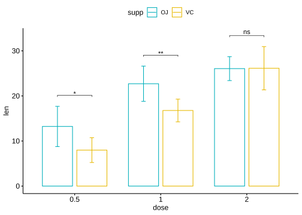

1 条图
Code
df <- ToothGrowth |> rownames_to_column("id")1.1 基础柱状图


1.2 修改边框和填充颜色

1.3 添加标签
Code
ggplot(df,aes(id,len))+
geom_col()+
ggrepel::geom_text_repel(aes(y=len+3,label=len))
1.4 添加散点、抖动点
Code
ggplot(mpg, aes(x = drv, y = hwy, fill = as.factor(cyl))) +
geom_bar(stat = "summary",fun=mean, position = position_dodge(1)) +
stat_summary(fun.data = 'mean_sd',geom="errorbar",position = position_dodge(1),
width=.2,linewidth=1)+
geom_point(position = position_dodge(1),
size = 3,alpha=0.3
) 
Code
df <- ToothGrowth
ggplot(df, aes(x = supp, y = len)) +
geom_bar(
aes(fill = factor(dose)),
stat = "summary",
fun = mean,
position = position_dodge(width = 0.9)
) +
geom_point(position = position_jitterdodge(jitter.width = 0.1),
aes(color = factor(dose)),
alpha = 0.7)+
scale_color_manual(values = c("red","green","blue"))|
ggplot(df, aes(x = supp, y = len)) +
geom_bar(
aes(fill = factor(dose)),
stat = "summary",
fun = mean,
position = position_dodge(width = 0.9)
) +
geom_dotplot(position = position_dodge(width = 0.9),
aes(fill = factor(dose)),dotsize = 0.8,
binaxis = "y", stackdir = "center",color="black",
alpha = 0.7)+
scale_fill_manual(values = c("red","green","blue"))
#> Bin width defaults to 1/30 of the range of the data. Pick better value with
#> `binwidth`.
1.5 分组排序条图 waterfall barplot
Code
library(tidyverse)
library(ggpubr)
library(ggsci)
library(readxl)
c <- read_excel("data/01source.xlsx",sheet=1,range = "A2:D16") |>
rename(
LR_DPVB=`LR-DPVB`
) |>
pivot_longer(
cols = CON:LR_DPVB,
names_to = "treatment",
values_to = "changerate"
) |>
mutate(
treatment=factor(treatment,levels=c('CON','LDRT','DPVB','LR_DPVB')),
changerate=if_else(changerate>=1,100,changerate*100)
) |>
arrange(treatment)|>
drop_na() |>
mutate(
id=1:52
) Code
ggplot( c ,aes(x=id,y=changerate,fill=treatment))+
geom_bar(stat = "identity",position = "dodge",width =0.8)+
scale_fill_jco()+
scale_y_continuous(name = "MRI tumor volume change from baseline (%)",
limits = c(-100,100),
breaks = seq(-100,100,50),
)+
theme_pubr()+
theme(
legend.position = c(0.8,0.8),
legend.title = element_blank(),
axis.title.x = element_blank(),
axis.text.x = element_blank(),
axis.ticks.x = element_blank(),
axis.line.x = element_blank(),
plot.title = element_text(hjust = 0.5),
)+
ggtitle("Hepa1-6 tumor")+
geom_hline(yintercept = 0,color = "black",linetype =1,linewidth=0.8)+
geom_hline(yintercept=c(20,-30), colour="gray15", linetype=3,linewidth=0.8)+ # 0 = blank, 1 = solid, 2 = dashed, 3 = dotted,
# 4 = dotdash, 5 = longdash, 6 = twodash
annotate(geom = "text",x=c(2,50),y=c(-30,20),
label = c("PR:-30%","PD:20%"),
vjust = -0.5,
)
#> Warning: A numeric `legend.position` argument in `theme()` was deprecated in ggplot2
#> 3.5.0.
#> ℹ Please use the `legend.position.inside` argument of `theme()` instead.
1.6 分组条形图添加 errorbar、significance 、dotplot
Code
g<-read_excel("data/01source.xlsx",sheet=1,range="G2:Z3")
#> New names:
#> • `` -> `...2`
#> • `` -> `...3`
#> • `` -> `...4`
#> • `` -> `...5`
#> • `` -> `...7`
#> • `` -> `...8`
#> • `` -> `...9`
#> • `` -> `...10`
#> • `` -> `...12`
#> • `` -> `...13`
#> • `` -> `...14`
#> • `` -> `...15`
#> • `` -> `...17`
#> • `` -> `...18`
#> • `` -> `...19`
#> • `` -> `...20`
colnames(g) <- rep(c('CON','LDRT','DPVB','LR_DPVB'),each=5)
g<- g |> pivot_longer(
cols = everything(),
names_to = "treatment",
values_to = "liverweight"
)|>
mutate(
treatment=factor(treatment,levels=c('CON','LDRT','DPVB','LR_DPVB'))
)
g
#> # A tibble: 20 × 2
#> treatment liverweight
#> <fct> <dbl>
#> 1 CON 1.75
#> 2 CON 1.8
#> 3 CON 2.01
#> 4 CON 1.52
#> 5 CON 1.63
#> 6 LDRT 1.73
#> 7 LDRT 2.05
#> 8 LDRT 1.48
#> 9 LDRT 1.66
#> 10 LDRT 1.68
#> 11 DPVB 1.2
#> 12 DPVB 1.38
#> 13 DPVB 1.52
#> 14 DPVB 1.62
#> 15 DPVB 1.39
#> 16 LR_DPVB 1.2
#> 17 LR_DPVB 1.23
#> 18 LR_DPVB 1.13
#> 19 LR_DPVB 1.03
#> 20 LR_DPVB 0.89Code
source("function/calculate_t_tests.R")
calculate_t_tests(g,"treatment","liverweight")
#> CON LDRT DPVB LR_DPVB
#> CON NA NA NA NA
#> LDRT 0.8639404014 NA NA NA
#> DPVB 0.0193695457 0.0359059495 NA NA
#> LR_DPVB 0.0003376202 0.0008265681 0.008820249 NA
Note
函数calculate_t_tests
Code
# 定义计算两两组之间t检验的函数
calculate_t_tests <- function(data, group_by, value_column) {
# data: 数据框
# group_by: 组别的列名
# value_column: 要比较的数值的列名
# 提取唯一的组别
groups <- unique(data[[group_by]])
# 初始化结果矩阵
result_matrix <- matrix(NA, nrow = length(groups), ncol = length(groups),
dimnames = list(groups, groups))
# 循环遍历所有可能的组合
for (i in 1:(length(groups)-1)) {
for (j in (i+1):length(groups)) {
# 提取两组数据
group1_data <- data[data[[group_by]] == groups[i], value_column]
group2_data <- data[data[[group_by]] == groups[j], value_column]
# 执行t检验
t_test_result <- t.test(group1_data, group2_data)
# 提取p值
p_value <- t_test_result$p.value
# 将p值存入结果矩阵
#result_matrix[groups[i], groups[j]] <- p_value
result_matrix[groups[j], groups[i]] <- p_value
}
}
# 返回结果矩阵
return(result_matrix)
}1.6.1 ggpubr
Code
library(ggpubr)
ggbarplot(data = g,
x="treatment",y="liverweight",
add = c("mean_sd"),
fill = "treatment",
palette = "jco",
title = "DEN+CCl4 tumor",
xlab = "",
ylab='liver weight (g)',
legend='none',
)+
stat_compare_means(
#aes(label='p.format'),
comparisons = list(c('CON','LDRT'),c("DPVB",'LR_DPVB'), c("CON","LR_DPVB")),
method = 't.test',
tip.length = c(0,0,0,0,0,0),
bracket.size = 1,linewidth=1)+
theme(plot.title = element_text(hjust = 0.5),
axis.text.x = element_text(angle = 45,vjust = 0.5))+
geom_dotplot(data = g,
mapping=aes(x=treatment,y=liverweight),
binaxis = 'y',stackdir = 'center',binwidth = 0.05)
1.6.2 ggplot2+ggsignif
Code
library(ggsignif)
g |>
summarise(
n=n(),
mean=mean(liverweight),
sd=sd(liverweight),
.by=treatment
) |>
ggplot(aes(treatment,mean,fill=treatment))+
geom_bar(stat = "identity",width = .7,position = position_dodge())+#条形图
geom_errorbar(aes(ymin=mean-sd,ymax=mean+sd),
width=.2,color="black",linewidth=.8)+#误差棒
geom_signif(data = g,
mapping=aes(x=treatment,y=liverweight),
comparisons = list(c('CON','LDRT'),c("DPVB",'LR_DPVB'),
c("CON","LR_DPVB")),
annotations = c("p=0.8639","p=0.0088","p=0.00034"),
map_signif_level=F,
tip_length=c(0.0,0.0,0.0,0.0,0.0,0.0),
y_position=c(2.1,1.8,2.35),size = .8,
textsize = 5,
test = "t.test"
)+
theme_pubr()+
scale_fill_jco()+
scale_y_continuous(limits = c(0,2.5))+
labs(
x='',
y='liver weight (g)',
title="DEN+CCl4 tumor"
)+
theme(
plot.title = element_text(hjust =0.5 ),
legend.position = 'none',
axis.text.x = element_text(angle = 45,vjust = .5)
)+
geom_dotplot(data = g,
mapping=aes(x=treatment,y=liverweight),
binaxis = 'y',
stackdir = 'center',#居中
fill='black',
binwidth = 0.05)
#> Warning in geom_signif(data = g, mapping = aes(x = treatment, y = liverweight),
#> : You have set data and mapping, are you sure that manual = FALSE is correct?
1.6.3 分组并列，组内显著性p值
https://www.datanovia.com/en/blog/tag/ggpubr/
Code
f2e <- read_excel("data/01source.xlsx", sheet = 3, range = "A2:M4")
#> New names:
#> • `` -> `...3`
#> • `` -> `...4`
#> • `` -> `...6`
#> • `` -> `...7`
#> • `` -> `...9`
#> • `` -> `...10`
#> • `` -> `...12`
#> • `` -> `...13`
colnames(f2e) <-
c("type", rep(c('CON', 'LDRT', 'DPVB', 'LR_DPVB'), each = 3))
f2e |> pivot_longer(cols = -1,
names_to = "trt",
values_to = "pct",
) |>
mutate(trt = factor(trt, levels = c('CON', 'LDRT', 'DPVB', 'LR_DPVB'))) -> f2eCode
library(ggpubr)
library(rstatix)
stat.test <- f2e %>%
group_by(type) %>%
t_test(pct ~ trt) |>
adjust_pvalue(method = "bonferroni") %>%
add_significance("p.adj") |>
add_significance("p")
stat.test <- stat.test %>%
add_xy_position(fun = "mean_sd", x = "type", dodge = 1)|>
dplyr::filter(group1=="CON"&group2=="LR_DPVB")
e_left <- ggbarplot(f2e, x = "type", y = "pct",
fill = "trt", palette = "jco",
add =c("mean_sd"), add.params = list(group = "trt"),
position = position_dodge(1),
#legend="none",
legend.title="",
)+
scale_y_continuous(limits = c(0,80))+
stat_pvalue_manual(
data = stat.test,
label = "p={p}({p.signif})",
tip.length = 0.05,
y.position = c(40,75),
#bracket.nudge.y = -2,
)+labs(
x='',
y='% in live CD45+ cell',
#title="Hepa1-6 tumor"
)
e_right <- e_left
library(patchwork)
(e_left + e_right)+
plot_annotation(
title = "Hepa1-6 tumor",
) +
plot_layout(guides = "collect")&
theme(
plot.title = element_text(hjust = 0.5),
legend.position = "top",
)
1.6.4 分组并列，组内组间显著性p值
Code
library(ggpubr)
library(rstatix)
df <- ToothGrowth
df$dose <- as.factor(df$dose)
bp <- ggbarplot(
df,
x = "dose",
y = "len",
add = "mean_sd",
color = "supp",
palette = c("#00AFBB", "#E7B800"),
position = position_dodge(0.8)
)
# 统计检验
stat.test <- df %>%
group_by(dose) %>%
t_test(len ~ supp) %>%
adjust_pvalue(method = "bonferroni") %>%
add_significance("p.adj")
stat.test <- stat.test %>%
add_xy_position(fun = "mean_sd", x = "dose", dodge = 0.8)
stat.test2 <- df %>%
t_test(len ~ dose, p.adjust.method = "bonferroni")
stat.test2 <- stat.test2 %>%
add_xy_position(x = "dose")
pwc <- df %>%
group_by(supp) %>%
t_test(len ~ dose, p.adjust.method = "bonferroni")
pwc
#> # A tibble: 6 × 11
#> supp .y. group1 group2 n1 n2 statistic df p p.adj
#> * <fct> <chr> <chr> <chr> <int> <int> <dbl> <dbl> <dbl> <dbl>
#> 1 OJ len 0.5 1 10 10 -5.05 17.7 0.0000878 0.000263
#> 2 OJ len 0.5 2 10 10 -7.82 14.7 0.00000132 0.00000396
#> 3 OJ len 1 2 10 10 -2.25 15.8 0.039 0.118
#> 4 VC len 0.5 1 10 10 -7.46 17.9 0.000000681 0.00000204
#> 5 VC len 0.5 2 10 10 -10.4 14.3 0.0000000468 0.00000014
#> 6 VC len 1 2 10 10 -5.47 13.6 0.0000916 0.000275
#> # ℹ 1 more variable: p.adj.signif <chr>
pwc <- pwc %>%
add_xy_position(
x = "dose",
fun = "mean_sd",
group = "supp",
dodge = 0.8
)
# 组间组内复合
bp +
stat_pvalue_manual(stat.test, label = "p.adj.signif", tip.length = 0.01) +
stat_pvalue_manual(
stat.test2,
label = "p",
tip.length = 0.02,
step.increase = 0.05
) +
scale_y_continuous(expand = expansion(mult = c(0.05, 0.1))) +
stat_pvalue_manual(
pwc,
color = "supp",
step.group.by = "supp",
tip.length = 0,
step.increase = 0.1
)